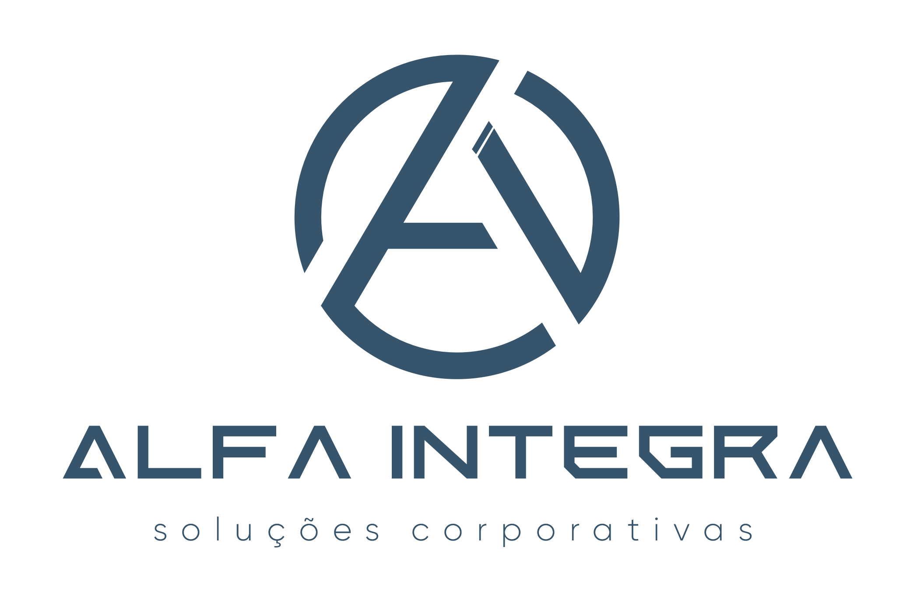

A Alfa Integra atua na estruturação, priorização e governança de iniciativas digitais para saúde pública e privada, conectando visão estratégica, usabilidade e execução incremental.
Entrar em contatoEstruturação de backlog, priorização, acompanhamento executivo e gestão de transformação digital.
Mapeamento de fluxos, interoperabilidade e evolução contínua de ecossistemas digitais.
Mockups navegáveis, validação visual e desenho de jornadas focadas em usabilidade.
Modelo híbrido com discovery, quick wins, desenvolvimento contínuo e adoção operacional.
A Alfa Integra trabalha com evolução incremental:
Email: flavio.johansen@alfaintegra.com.br